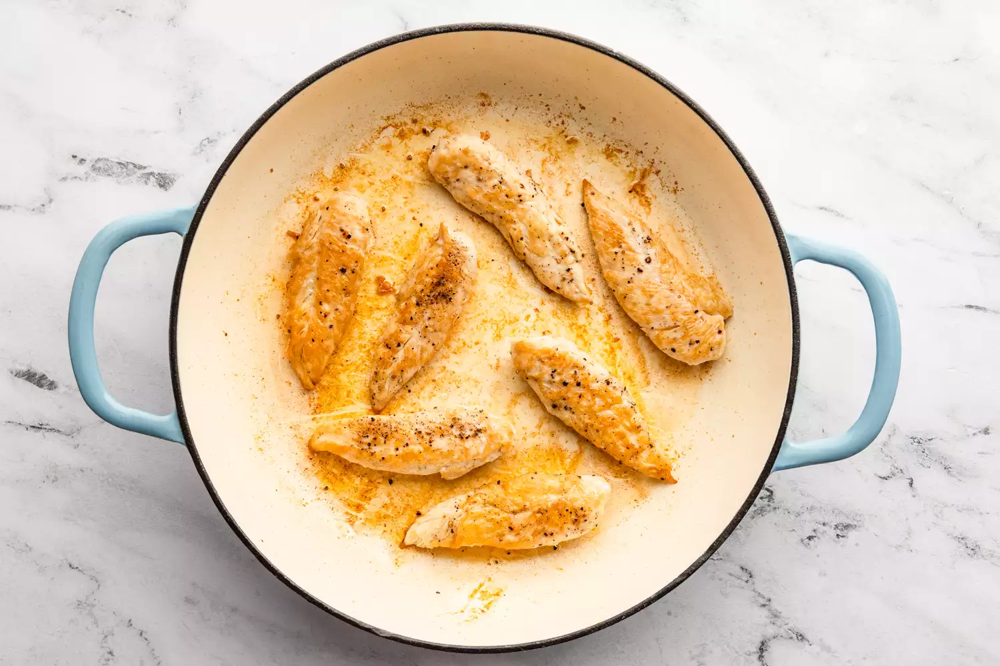
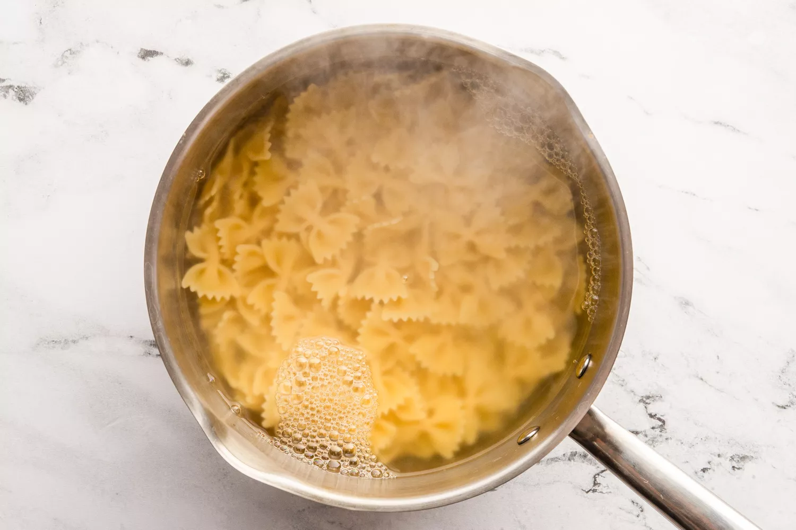
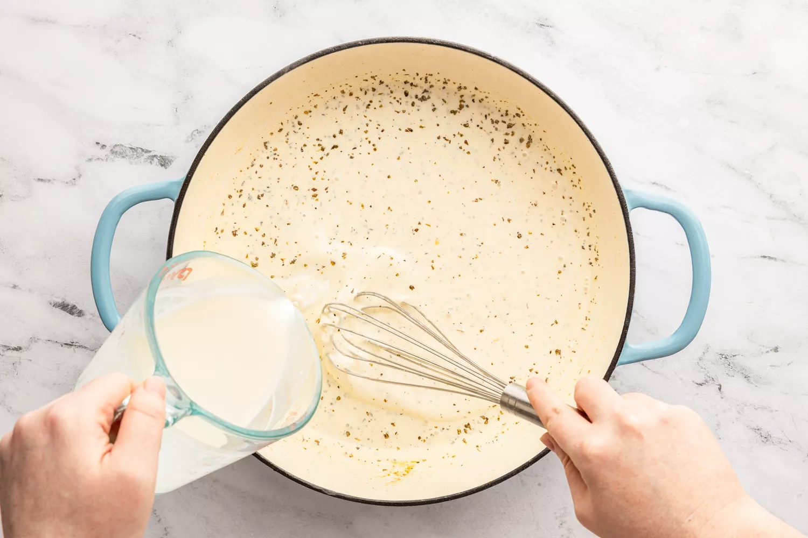
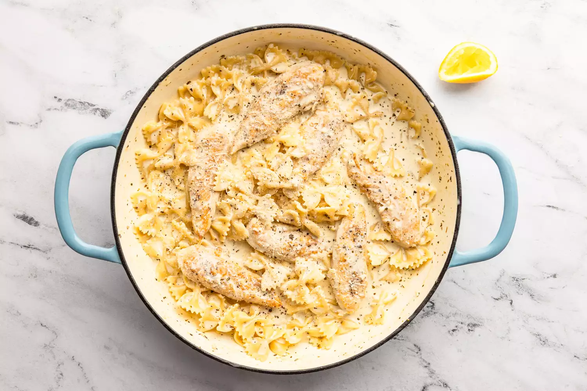

The only salad that I know of that most kids routinely and voluntarily eat is Caesar salad. Kids love it, adults love it—the umami-packed dressing is a great unifier. What do you if you want something heartier than salad, but you still want the punchy flavors and creaminess of Caesar? Make this chicken Caesar pasta.
This magical dish is what would happen if you combined Alfredo and Caesar into one dish to rule them all. The sauce has all of the makings of Caesar dressing but swaps the egg for heavy cream and combines it with juicy chicken tenderloins. You can’t go wrong serving it over your favorite pasta, or, for a low-carb option, serve it over romaine hearts with croutons.
Bring a large pot of water to a boil over high heat.
Pat the chicken dry with paper towels. Sprinkle evenly with 1 teaspoon of the salt and 1/4 teaspoon of the pepper.
Heat 2 tablespoons of the oil in a large skillet over medium heat, about 3 minutes. Add the seasoned chicken and cook, turning as needed, until a thermometer inserted in the thickest part of the chicken registers 165°F, about 8 minutes.
Remove the chicken from the skillet, set aside on a plate, and loosely cover with aluminum foil to keep warm.
Stir the pasta and 1 tablespoon of the salt into the boiling water. Cook, stirring occasionally, until the pasta is al dente, about 11 minutes.
While the pasta is cooking, heat the remaining 1 tablespoon of oil in the same skillet over medium heat (do not wipe the skillet clean). Add the garlic and anchovies and cook, stirring constantly, until fragrant, about 30 seconds.
Slowly whisk in the cream, Dijon, and Italian seasoning and use the whisk to scrape any browned bits from the skillet. Cook over medium heat, whisking constantly, until slightly thickened, about 3 minutes.
Remove from the heat and whisk in the Parmesan, lemon juice, and remaining 1/4 teaspoon each salt and pepper until the cheese is melted.
When pasta is done cooking, drain well. Transfer to the skillet with the sauce. Stir in the chicken tenders until fully coated. Garnish with additional Parmesan and black pepper, if desired.
